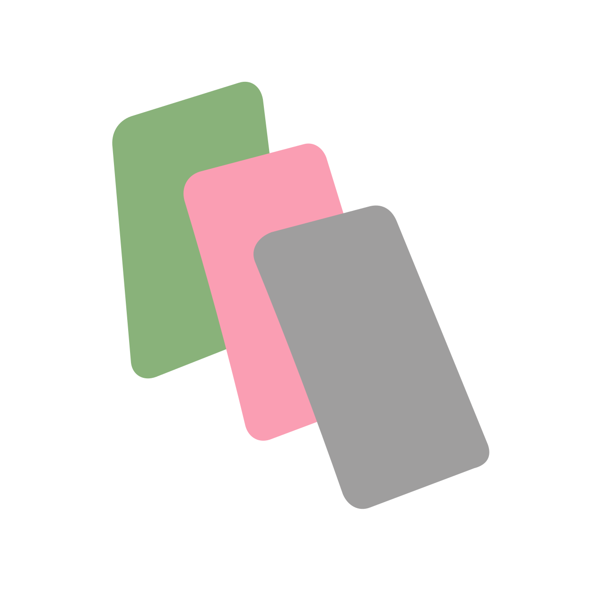

Let’s build the visual world for Slow Signal. Dreamy images, tactile grain, and a sound you can almost see.
✳
I’ve put the first studies on the canvas: three image directions, a landing page, and two sonic sketches.
The softer flower feels right for the main poster. The chrome studies give us a different texture to come back to.
✓
AcanvasSlow Signal · visual workspace
↗Love the grain. Keep the colours open. Could the landing page feel as quiet as the sound?
✳
I kept the page spare and brought the listening notes into the same workspace.
Select an image or a group on the right and leave the next direction there.
Local ⌥
Acanvas

Slow Signal50%